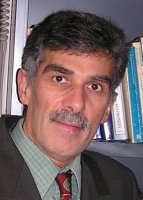

ترجمه :جلوه جواهری

سایت زنستان: من هیچگاه افتخار دیدار یا ملاقات با خانم پایدار را نداشته ام۔ آشنایی من با ایشان ابتدا از طریق نوشته های اولیه ایشان در“نیمه دیگر“ با نام مستعار "ناهید یگانه" و بعدا ها مطالعه و بررسی کتاب "زنان و روند سیاسی در ایران قرن بیستم" بود۔
آنچه که من را به افکار و رویکرد نظری و عملی خانم پایدار جذب میکرد برخورد انسانی، دمکراتیک، و در عین حال واقعبینانه ایشان نسبت به اجتماع و تاریخ و اندیشه های گوناگون در آن بود۔ بسیاری از کوشندگان فمینیست ایشان را بخاطر درک ضرورت مبارزاتی مرتبط کردن فمینیست های عرفی و مسلمان مورد ستایش قرار داده اند۔ به نظر من نفس پذیرش دیدگاه های متفاوت و منظور داشتن آنها در شناخت و برخورد با واقعیت اهمیتی بیشتر از ضرورت سیاسی دارد۔ ضرورت سیاسی، امری زمانی است و عدم رعایت آن میتواند با عواقب ناگواری همراه گردد۔ اما تنگ اندیشی و جزم اندیشی انسان عواقبی فرازمانی داشته و وی را نسبت به واقعیات گمراه داشته و بسا در جهالت وا می نهد۔ برخورد خانم پایدار با واقعیات زندگی اجتماعی و سیاسی زنان در تاریخ معاصر ایران نه تنها پیشرو، نظریه پرداز، و تحقیقی است، بلکه سرشار از واقع بینی و حقیقت جویی است۔ او، شاید بیش از هرمحقق دیگر در مورد مسایل زنان ایران، به این حقیقت پایبند بود که درک پیچیدگی های ساختار حاکم بر زندگی زنان بیشتر به شناخت گوناگونی انگیزه ها و اندیشه های حاکم برگروه های متفاوت زنان دارد تا داشتن نظریه ای جامع و جهان شمول۔ برای خانم پایدار، نه اسلام، نه ناسیونالیسم ایرانی، نه نوگرایی غربی، و نه تاریخ ایران، هیچ یک از ماهیتی خالص و یکدست و جهان شمول برخوردار نیستند۔ این کلیت های دینی، فرهنگی، سیاسی، و اجتماعی نزد گروه ها و بخش های مختلف زنان در جامعه هریک تعابیری متفاوت یافته و به عملکردی گوناگون می انجامد۔ رویکرد انتقادی به تاریخ مبارزاتی زنان در ایران نیازمند شناخت این تنوع و ترکیب تاریخی عوامل دربرگیرنده آن است۔ کتاب زنان و روند سیاسی در ایران قرن بیستم نمونه برجسته ای از بکارگیری این رویکرد است و گزارش زیر بررسی مختصری است از این کتاب که در سال 1997 میلادی برای مجله دانشگاهی "مورخ" (The History) نوشته شده بود۔
با توجه به موضوع و رویکرد کتاب، انتشار این اثر بسیار به موقع بوده است. پروین پایدار رویکردی انتقادی، تاریخی و چند رشته ای را بسط می دهد، که تصورات غلط و تعمیم یافته مسلط درباره روابط جنسیتی را، که در مطالعات مردمحور ایرانی یافت می شود، به چالش می کشد. این رویکردهای نوین شامل برخورد ماهیت گرایانه به اسلام، تعیین اسلام و یا سرمایه داری/امپریالیسم به عنوان تنها دلیل ستم بر زنان، یا برابری جنسیتی به عنوان یک گفتمان غربی، و یا قرار دادن ستم زنان در حوزه سنت می گردد. در حالی که بسیاری از نویسندگان زنان مسلمان را به عنوان مخلوقان مطیع اسلام توصیف می کنند، محققان خاور میانه اغلب آنها را به عنوان قربانیان امپریالیسم، تهاجم فرهنگی، استبداد سیاسی، پدرسالاری، و ستم طبقاتی نشان می دهند. تعصبات ملی گرایانه، سیاسی، و ایدئولوژیک اغلب این مطالعات را خدشه دار كرده است. روش شناسی های "کورجنسیتی" و فرضیات غلط آنها باعث چشم پوشی و عدم درك سهم زنان در فرایندهای سیاسی و اقتصادی شده است.
اگر چه از نظرخانم پایدار بسیاری از این مطالعات بخشی از حقیقت را در خود دارند، ولی هیچ کدام نمی توانند به طور کامل پیچیدگی روابط جنسیتی را در خاور میانه شرح دهند. او در پی "رویکرد معین" برای درك تغییر اجتماعی و دگرگونی سیاسی است که دلایل مختلف تغییر را با درنظر گرفتن عوامل درون زا (بومی) و برون زای فرهنگی، اجتماعی، اقتصادی، سیاسی، و تاریخی مشخص دارد. چنین رویکردی با تحلیل نیروها و فرایندهای اقتصادی و اجتماعی معینی که گفتمان های ایدئولوژیک و خط مشی دولت را درباره زنان ایران در قرن بیستم شکل داده اند، آغاز می شود.
نویسنده با شناخت گفتمان های مدرنیته، انقلاب، و اسلامی شدن، به عنوان عوامل تعیین کننده ی کلی موقعیت زنان در فرایندهای سیاسی ایران در قرن بیستم، موقعیت زنان را در زمینه این گفتمان ها بررسی می کند و نشان می دهد چگونه هر گفتمانی پدیدار شد، رشد کرد و بر وضعیت زنان در حوزه های اجتماعی، سیاسی و اقتصادی تاثیر گذاشت. گفتمان مدرنیته سه دوره ی مشخص مشروطیت (1920-1905) ، ملت سازی (دهه 1920 تا اوایل دهه 1940) و ملی گرایی (دهه1940تا اواسط 1960) را در بر می گیرد. مقطع اول به رابطه مدرنیته با جامعه ایرانی مربوط شده و ایرانیان را با افکار غربی درمورد دموکراسی، سوسیالیسم، آزادی و پیشرفت های تکنولوژی آشنا می سازد. در حالیکه اغلب اصلاح طلبهای سکولار برخی از این افکار را پذیرفتند، اغلب روحانیون آنها را رد کردند. این منازعه ها منتج به تلفیقی شد که اولین قانون اساسی ایرانی جلوه گر آن است. در آن هنگام منازعه درباره سنت در برابر مدرنیته نبود، بلکه درباره اینکه چه سنتى و چه نوع مدرنیته ای را باید كسب كرد. جنبش مشروطه نقطه عطفی در مشارکت زنان در حرکتهای جمعی سیاسی بود. افکار جدیدی ارایه شد، فرصت هایی برای مشارکت سیاسی فراهم آورده شد ، و زمینه برای توسعه جنبش زنان در ایران فراهم شد. اما از آنجا كه مشارکت زنان در جنبش و حمایت آنها از آن متنوع بود، دستاورهای آن هم یكدست نبود.
دوره دوم با به قدرت رسیدن رضا شاه آغاز شد. در این زمان مردم مدرنیته را با یک دولت مرکزی قوی، تقلید از غرب، سکولاریزاسیون، توسعه اقتصادی، و رهایی زنان برابر می دانستند. دولت نقش فعالی در تغییر موقعیت زنان داشت. نظام پهلوی موقعیت زنان را نشان مدرنیته و ترقی تلقی می كرد و آنرا جزیی از فراگردهای ملت سازی و توسعه ملی خود قرار داد. در این مورد هم باز نتیجه یكدست نبود؛ فعالان زنان مستقل تحریم شدند، خانواده پدرسالارحفظ شد، قوانین شریعت همچنان توسط روحانیون برای خانواده مورد استفاده قرار گرفت، زنان وارد زندگی اجتماعی شدند، حجاب به صورت اجباری برداشته شد، دادگاه ها عرفی (سکولاریزه) شد، و مشارکت زنان در تحصیل و استخدام گزینشی مورد تشویق قرار گرفت. در دهه 1950 این تصور از مدرنیته ، که از طرف بسیاری از ملی گرایان سکولار حمایت شده بود، مورد حمله ملی گرایان فرهنگی و سکولار قرار گرفت. طی سالهای 1979-1978 ، این حمله ها در گفتمان انقلاب به اوج خود رسید و امید زیادی را برای یک ساختار سیاسی و اجتماعی جدید به وجود آورد.
گرچه انقلاب 1979 به سلطه گفتمان مدرنیته پایان داد ، اما پیامد آن رد كامل مدرنیته برای بازگشت به گذشته اسلامی نبود. گفتمان "اسلامی كردن جامعه" تركیبی بود از سه عنصر اسلام، مدرنیته، و فرهنگ ایرانی. با اقتباس از منابع متناقض و پاسخ گویی به نیازها و مطالبات متفاوت، این فراگرد برآیندى متناقض داشت. از طرفی، دولتی سركوبگركه زنان را به عنوان شالوده جامعه و نماد بدیلی اسلامی برای اندیشه غربی زنانگی می شناخت ایجاد شد و اغلب پیشرفت های سکولار دوره پهلوی را، که بر زندگی زنان تاثیرگذار بود، نفی كرد۔ از طرف دیگر، تلاش های زنان اسلامی، فمینیست، و ضروریات فراگرد سیاسی ایجاد دولت در زمان معاصر، دولت دین مدار جدید را وادار کرد که بعضی از آن پیشرفت ها را، ولو بصورت استحاله شده، دوباره برقرار کند۔
به علت وزن و اهمیت عواملی که در رویدادهای اجتماعی و تاریخی متفاوت تاثیری گوناگون داشته اند، زنان ایرانی قرن بیستم نه حقوق شان را بصورت یکپارچه دریافته اند و نه بطور یكسان برای آن جنگیده اند. مبارزه برای ارتقاء پایگاه زنان دوره های مختلفی را پشت سر گذاشته و معانی متفاوتی پیدا کرده است. برآیند این مبارزه اغلب یكدست نبوده، تاثیر ناهمگونی بر گروه های مختلف زنان داشته، به صورت مختلف و واكنش های متضادی را برانگیخته است. پیشرفت های به دست آمده در یک حوزه یا طی یک دوره گاه با عقب نشینی در دوره ها یا حوزه های دیگر توام بوده است. هیچ یک از گفتمان ها درباره زنان یكدست و ثابت نبوده است. هر یك از زمانی به زمان دیگر تغییر کرده؛ برای گروه های مختلف معانی متفاوتی داشته؛ و بسته به طبقه اجتماعی، قومی، محل اقامت، نقش تولیدی، و مذهب زنان، تاثیری متفاوت بر آنان داشته است.
به نظر پایدار، پیچیدگی مسائل جنسیتی، تعدد عوامل درگیر در تغییر سیاسی، وجوه انقلابی و تحولی دگرگونی اجتماعی در ایران، تنوع علایق و وابستگی های زنان، و تعامل عوامل بومی، منطقه ای، ملی، و بین المللی، توجیه مسائل جنسیتی در امور سیاسی ایران را برای نظریات تقلیل گرای موجود در علوم اجتماعی بسیار دشوار می سازد. این تحلیل عمیق، کامل، و چند لایه ای پایدارقابل تقدیر است.